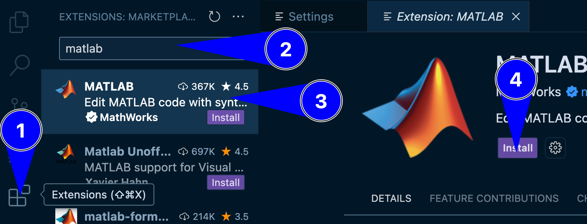
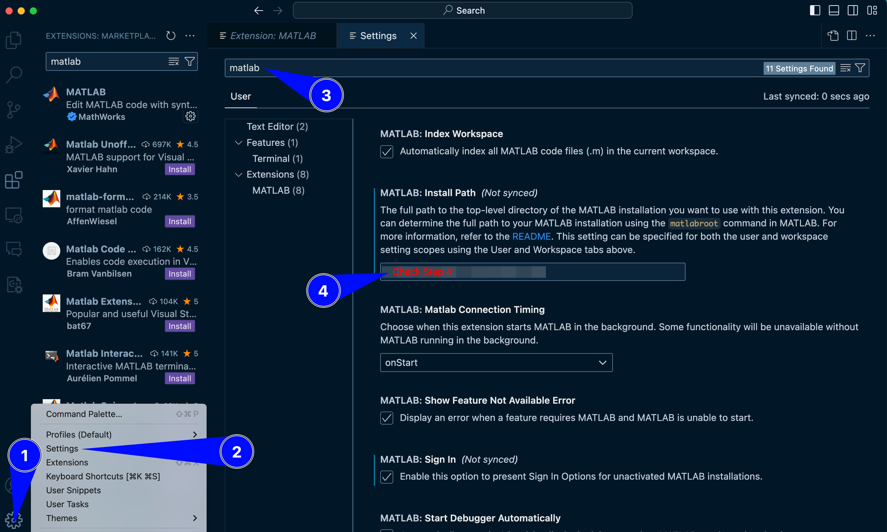
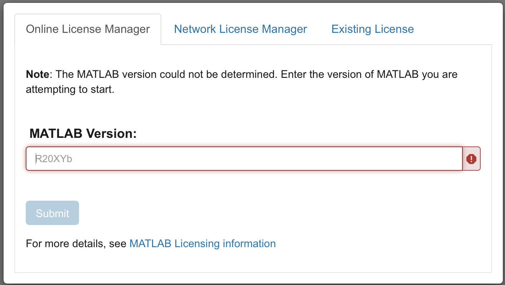

Mar 14, 2025 | 964 words | 10 min read
14.1.1. Materials#
Reading#
Follow the steps provided here to install MATLAB on your system.
Do some research into some examples in MATLAB.
Character and String Arrays#
Definition of Character and String Arrays in MATLAB#
A character array is a sequence of characters. A string array is a container for pieces of text. Refer to https://www.mathworks.com/help/MATLAB/characters-and-strings.html
Character arrays are created using single quotes ‘…’
String arrays are created using double quotes “…”
MATLAB string arrays have more built-in functionality and behave more like Python strings.
String literals in MATLAB#
A string literal is a sequence of characters enclosed in:
Single quotes (’…’) for character arrays
Double quotes (”…”) for string arrays
Examples:#
charArray = 'Hello': Character arraystringArray = "Hello": String array
String manipulation as an immutable sequence#
For strings x and y with indices i, j, k, the following operations are supported:
Indexing :
x(i),x(end-i+1)Slicing (Substring extraction) :
extractBetween(x, i, j),x(i:j)Concatenation :
x + y(for string type),[x, y](for char arrays)Repetition :
repmat(x, 1, n), where n is an integerMembership test :
contains(x, y),~contains(x, y)Length :
strlength(x),length(x),min(x),max(x)Iteration :
for i = 1:strlength(x)Comparison :
x == y,strcmp(x, y),strcmpi(x, y),x < y,x > ySearching :
strfind(x, y),contains(x, y),startsWith(x, y),endsWith(x, y)Counting :
count(x, y)Ordering :
sort(x),reverse(x)
String methods in MATLAB#
For strings x and y, the following methods are supported:
lower(x): Converts all characters to lowercaseupper(x): Converts all characters to uppercasesplit(x): Splits a string into a list of substringsstrtrim(x): Removes leading and trailing whitespacedeblank(x): Removes trailing whitespace onlyregexprep(x, '^\s+', ''): Removes leading whitespacereplace(x, old, new): Replaces a substring with another substringstrjoin(list, x): Joins a list of substrings into a single stringstartsWith(x, prefix): Checks if a string starts with a specified prefixendsWith(x, suffix): Checks if a string ends with a specified suffixisstrprop(x, 'alpha'): Checks if all characters are alphabeticisstrprop(x, 'digit'): Checks if all characters are digitsisstrprop(x, 'alphanum'): Checks if all characters are alphanumericall(isstrprop(x, 'lower')): Checks if all characters are lowercaseall(isstrprop(x, 'upper')): Checks if all characters are uppercaseall(isstrprop(x, 'wspace')): Checks if all characters are whitespace
Notes:#
MATLAB string arrays (”…”) support more built-in methods than character arrays (’…’). If using character arrays, you may need to convert them:
x = convertCharsToStrings(y): Convert character array to string
Videos#
MATLAB Interface Introduction#
Algebraic Operations in MATLAB#
Built-in Functions#
Variable Names#
Assigning Vectors and Matrices#
Array Indexing: Copying Values#
Array Indexing: Replacing Values#
Scripts#
The fprintf Command#
Publish MATLAB script#
MATLAB in VS Code#
Follow the steps below to connect your MATLAB account to VS Code.
Note
Before you proceed, MATLAB (R2021b or later version) must be installed on your system. To install MATLAB, click here
Open VS Code and install the MATLAB extension from the Extensions Marketplace.

Fig. 14.1 A representation of installing MATLAB extension on VS Code#
Go to Settings in VS Code.
Search for “MATLAB: Executable Path”.
Set the path to your MATLAB executable. You may have to update the version of MATLAB appropriately.
C:\Program Files\MATLAB\R2024a

Fig. 14.2 A representation of adjusting settings for MATLAB extension on VS Code#
Close and reopen VS Code to apply the changes.
Open a new MATLAB terminal in VS Code.
Run the following command to test the set up:
fprintf("hello World")
Fig. 14.3 A representation of opening a new MATLAB terminal and testing a print function in MATLAB#
If the test function does not run, try restarting VS Code. Then, check the bottom right corner of VS Code for a notification, prompting you to connect your MATLAB Online Account. Click OK.

Fig. 14.4 A representation of connecting MATLAB Online account#
Now, a new tab will be opened in your web browser. Log in with your MATLAB credentials.

Fig. 14.5 A representation of connecting MATLAB Online account#
Once logged in, enter your MATLAB version as shown in Step 4. You may have to update the version of MATLAB appropriately.

Fig. 14.6 A representation of connecting MATLAB Online account#
Go to Step 5 and repeat the process.
Open VS Code and install the MATLAB extension from the Extensions Marketplace.
Fig. 14.7 A representation of installing MATLAB extension on VS Code#
Go to Settings in VS Code.
Search for “MATLAB: Executable Path”.
Set the path to your MATLAB executable. You may have to update the version of MATLAB appropriately.
/Applications/MATLAB_R2024a.app
Fig. 14.8 A representation of adjusting settings for MATLAB extension on VS Code#
Close and reopen VS Code to apply the changes.
Open a new MATLAB terminal in VS Code.
Run the following command to test the set up:
fprintf("hello World")
Fig. 14.9 A representation of opening a new MATLAB terminal and testing a print function in MATLAB#
If the test function does not run, try restarting VS Code. Then, check the bottom right corner of VS Code for a notification, prompting you to connect your MATLAB Online Account. Click OK.
Fig. 14.10 A representation of connecting MATLAB Online account#
Now, a new tab will be opened in your web browser. Log in with your MATLAB credentials.
Fig. 14.11 A representation of connecting MATLAB Online account#
Once logged in, enter your MATLAB version as shown in Step 4. You may have to update the version of MATLAB appropriately.
Fig. 14.12 A representation of connecting MATLAB Online account#
Go to Step 5 and repeat the process.
Open VS Code and install the MATLAB extension from the Extensions Marketplace.
Fig. 14.13 A representation of installing MATLAB extension on VS Code#
Go to Settings in VS Code.
Search for “MATLAB: Executable Path”.
Set the path to your MATLAB executable. You may have to update the version of MATLAB appropriately.
/usr/local/MATLAB/R2024a
Fig. 14.14 A representation of adjusting settings for MATLAB extension on VS Code#
Close and reopen VS Code to apply the changes.
Open a new MATLAB terminal in VS Code.
Run the following command to test the set up:
fprintf("hello World")
Fig. 14.15 A representation of opening a new MATLAB terminal and testing a print function in MATLAB#
If the test function does not run, try restarting VS Code. Then, check the bottom right corner of VS Code for a notification, prompting you to connect your MATLAB Online Account. Click OK.
Fig. 14.16 A representation of connecting MATLAB Online account#
Now, a new tab will be opened in your web browser. Log in with your MATLAB credentials.
Fig. 14.17 A representation of connecting MATLAB Online account#
Once logged in, enter your MATLAB version as shown in Step 4. You may have to update the version of MATLAB appropriately.
Fig. 14.18 A representation of connecting MATLAB Online account#
Go to Step 5 and repeat the process.
Optional Resources#
Click here to know more about how to get help in MATLAB